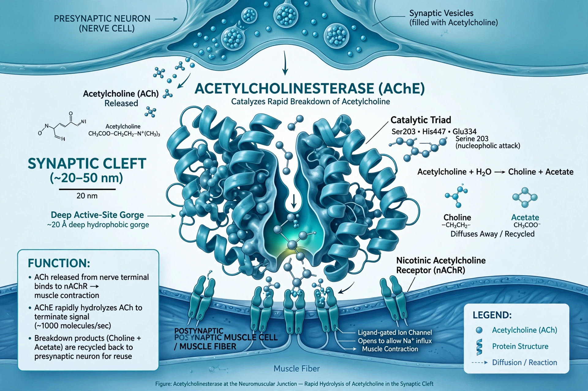

Acetylcholinesterase

| EC number | 3.1.1.7 |
|---|---|
| Function | Hydrolyses acetylcholine |
| Gene | ACHE (chromosome 7q22) |
| Location | Neuromuscular junctions, cholinergic synapses, red blood cells |
Acetylcholinesterase (AChE) is an enzyme that catalyses the breakdown of the neurotransmitter acetylcholine and of some other choline esters that function as neurotransmitters. It is found mainly at neuromuscular junctions and in chemical synapses of the cholinergic type, where it terminates synaptic transmission by splitting acetylcholine into acetate and choline almost immediately after release. AChE is one of the fastest enzymes known, approaching the diffusion limit.
Function and structure
Each AChE molecule degrades about 25,000 molecules of acetylcholine per second. Its active site lies at the bottom of a deep, narrow gorge lined with aromatic residues — a structure revealed by the enzyme's crystallisation from the Pacific electric ray Torpedo californica in 1991. A related enzyme, butyrylcholinesterase, is found in plasma and has broader substrate specificity.
Inhibitors
Because blocking AChE causes acetylcholine to accumulate, enzyme inhibitors have major medical and toxicological importance. Organophosphate insecticides and nerve agents such as sarin irreversibly inhibit AChE, causing cholinergic crisis and potentially death; carbamates inhibit it reversibly. Clinically, AChE inhibitors such as donepezil are used to treat symptoms of Alzheimer's disease, physostigmine and pyridostigmine are used in myasthenia gravis and anaesthesia, and oximes such as pralidoxime can reactivate the enzyme after organophosphate poisoning.